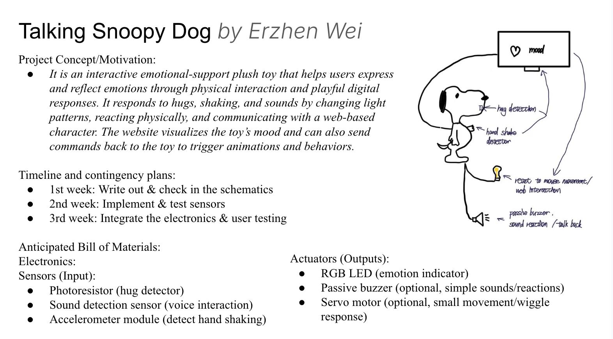

Updated Project Proposal!

After trying to combine the electronics with the 3D-printed candle prototype,
I found that they didn’t attach very well in practice,
and the 3D printing material isn’t transparent enough to show the LED light changing.
Because of that, I decided to adjust my final project.
Since I’ve already done most of the testing with the input sensors,
I decided to continue using some of the same sensors.
I’ve also incorporated some new elements I learned from
the “Web Talks Back” assignment into the updated concept.
The project is inspired by my childhood game “Tom Talking Cat,”
which is also where the name “Snoppy Talking Dog” comes from.
While I added more physical-world interaction to increase the entertainment.
One question I have is about the sensors,
I’m planning to use tape to bind them onto the pushy tool, would that be acceptable?
And I think the key challenge will be constructing a dog-shaped,
or near dog-shaped, character on the website side.
My alternative plan will be to use a simple geometric icon,
such as a square or circle, to demonstrate the character’s mood changes instead,
maybe with different colors.
Original Project Proposal!

The main challenges will lay at the selection and implentation of the sensors
and other electronics into the 3D printing prototype.
To ensure the smooth implentation of the project, I plan to start 3D printing
as soon as possible, to ensure the following measurement and testing work.
Also, I plan to try out several different sensors to test their feasibility.
For example, I will aim for using the touch sensor to complete the action of lighting
up candle, but if it is not sensitive enough or too sensitive, I'll simply switch to
button as back up plan.
Also, my current plan is pretty flexible with many optional features, so I could
add these additional features based on the time availability.